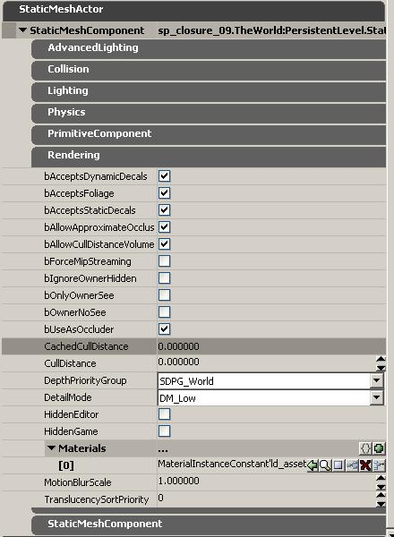

UDN
Search public documentation:
VisibilityCullingJP
English Translation
中国翻译
한국어
Interested in the Unreal Engine?
Visit the Unreal Technology site.
Looking for jobs and company info?
Check out the Epic games site.
Questions about support via UDN?
Contact the UDN Staff
中国翻译
한국어
Interested in the Unreal Engine?
Visit the Unreal Technology site.
Looking for jobs and company info?
Check out the Epic games site.
Questions about support via UDN?
Contact the UDN Staff
visibility culling
ドキュメントの概要: visibility culling プロセスと関連するクラスについての詳細説明。 ドキュメントの変更ログ: Joe Graf により作成、Andrew Scheidecker? と Ryan Brucks によりアップデート (2008 年5 月 12 日)。概観
UnrealEngine3のシーン管理では、凸状ゾーンについて錐台検証テストを行った結果「完全に不可視な要素」と分類されたプリミティブをレンダリングしない、というオーソドックスな方法によって可視性をカリングしています。このテストを通過したプリミティブは、可視でレンダリング対象である要素の候補となります。 同様のテストにより、あるライトについて、シーン内のどのプリミティブにその光が当たるかを定義します。visibility culling の場合と同じく、錐台形状およびビューやライトの位置を定義するポイントを情報として与えることにより、該当するプリミティブ候補を検出するクエリーです。錐台形状に属するすべてのポイントのうち、ビュー原点を結ぶラインが「開いた」状態となるポイントが該当とみなされます。 プラットフォーム シーンのレンダリング コードでは、オクルージョンクエリをはじめとする、プラットフォーム仕様の機能を使ったさらに多くのテストが実施されます。 不可視のプリミティブをドロップするためにエンジンが実行する自動visibility culling に加えて、他にもプリミティブのvisibility culling プロパティを具体的に操作できるようなたくさんの機能があります。カリングに影響を与えるプリミティブ プロパティ

以下のプロパティは、プリミティブがオクルードされる方法や、他のプリミティブをオクルードする方法に影響を与えます。- bAllowCullDistanceVolumes
- デフォルトは True です。True の場合、プリミティブは Cull Distance Volumes (下記参照) により影響されます。Cull distance volume 情報は、CachedCullDistance がプリミティブのセット CullDistance より_低い_場合に、プリミティブのセット CullDistance のみをオーバーライドします。
- CachedCullDistance
- エディット可能なプロパティではありません。このフィールドは、プリミティブが中に存在する CullDistanceVolumes によって設定されたカリングの距離を表示します。このプロパティ スクリーンショットでは、cull distance volume が使用されていないので 0 に設定されています。
- CullDistance
- 0 にデフォルト設定されており、これは、プリミティブが距離のみに基づいてオクルードされることは決してないことを意味します。CullDistance の値は Unreal ユニット内にあるので、プロジェクトのスケールにより好ましい値は変わってきます。Cull distance 、装飾のディテールや手すりなどの小さくて特定の距離になるとほとんど見えなくなるような、非常に小さい、または非常に薄いオブジェクトに実用的です。いわゆる「ポップ」が簡単に見えないような場所を見つけるには、カメラを前や後ろに動かしてCull distance を調節してみてください。
Cull Distance Volumes
Cull distance volumes は非常に有用な最適化ツールです。これは、ボリューム内のすべてのプリミティブに、個々のプリミティブのバウンダリに基づいて、自動的にCull distanceを設定します。Cull distance volume 値は、プリミティブのセット CullDistance よりも低い場合のみに使用されます。実装の主な意図は、詳細なインドアベースの大きなアウトドアマップを最適化するためで、Unreal Tournament 3では一般的です。 cull distance volume で、それぞれのエリアが異なる設定を持つような、非常に巧妙なシステムを作ることができます。しかしながらほとんどの場合、レベル全体を含むような 1 つの CullDistanceVolume から始めるのがベストでしょう。UT3 のほとんどのレベルは、レベル全体を取り巻く cull distance volume を使用しています。Cull Distance Volume の追加
 Cull Distance Volume はほかのボリューム タイプと同じように追加することができます。まず、希望のサイズのブラシを作ります (例: レベル全体をカバーするような)。ブラシの作成の詳細については、 BSP ブラシの使用 ページをご覧ください。‘Add Volume (ボリュームを追加)’ ボタンを右クリックして、ドロップダウン リストから CullDistanceVolume を選択します。
これでワールドに cull distance volume が作成されたので、それを選択し F4 を押すか、ダブルクリックをしてアクタ プロパティ ボックスを開きます。
以下が新しく作成された CullDistanceVolume のプロパティです。:
Cull Distance Volume はほかのボリューム タイプと同じように追加することができます。まず、希望のサイズのブラシを作ります (例: レベル全体をカバーするような)。ブラシの作成の詳細については、 BSP ブラシの使用 ページをご覧ください。‘Add Volume (ボリュームを追加)’ ボタンを右クリックして、ドロップダウン リストから CullDistanceVolume を選択します。
これでワールドに cull distance volume が作成されたので、それを選択し F4 を押すか、ダブルクリックをしてアクタ プロパティ ボックスを開きます。
以下が新しく作成された CullDistanceVolume のプロパティです。:
 “CullDistances” と呼ばれる、その中にいくらでもポイントを追加できるような 1 つの配列があります。各ポイントには、「サイズ」とアタッチされたCull distanceがあります。ボリューム内のそれぞれのプリミティブには、プリミティブのバウンダリに一番近いサイズを選び、そのアタッチされた「Cull distance」は、プリミティブの「キャッシュされたCull distance」となります。
TRUE (デフォルト設定) に設定されたbAllowCullDistanceVolume を持つcull distance volumeで囲まれた中心点のついたプリミティブすべては、 CullDistances 配列の設定を基に更新されたcull distanceを持ちます。 0でない限り、より低い値を内部で選ぶコードとしてcull distance volumesと共に動作するプリミティブ上で、 cull distanceを手動で設定するのは意味がありません。CullDistances 配列は、このサイズグループに使用するためのcull distance へのマッピングのサイズ(オブジェクト境界の球体の直径)で、コードはサイズが近いものを検出し、関連したcull distanceに割り当てます。
cull distance volumes のデフォルト設定は、Size=0, CullDistance=02とSize=10000, CullDistance=0の2つのエントリを持ちます。最初のCullDistance を1000 に設定することで、球体直径境界が5000以下のボリューム内の中心点でのオブジェクトは、cull distance 1000の効果が得られ、上記すべてに対しては、cull distance 0(別名no distance culling)の効果が得られます。最適な方法を使用することにより、配列エントリの順を気にすることなく最小のデータのエントリを可能にしました。より小さいオブジェクトのcull distance に影響することなくカリングを無効にするため、ハイエンド上にあるダミーポイントの挿入が必要がないことから、コードはcull distances 間でリニア補間をしません。
cull distance volumesのオーバーラッピングが起きた場合は、エンジンはプリミティブの最高値(最低値0以上)のものを選びます。
整理するには、CullDistances 配列内のすべてのサイズを、最小から最大の順に並べておくのがいい方法でしょう。中間値を追加するには ‘insert new item here (ここに新しいアイテムを追加)’ ボタンを使用してください。
新しい cull distance volume を始める際は、いくつかの新しい、増加するサイズを持つ CullDistances とCull distanceを追加します。以下は、設定が最初どのように見えるかという例です。:
“CullDistances” と呼ばれる、その中にいくらでもポイントを追加できるような 1 つの配列があります。各ポイントには、「サイズ」とアタッチされたCull distanceがあります。ボリューム内のそれぞれのプリミティブには、プリミティブのバウンダリに一番近いサイズを選び、そのアタッチされた「Cull distance」は、プリミティブの「キャッシュされたCull distance」となります。
TRUE (デフォルト設定) に設定されたbAllowCullDistanceVolume を持つcull distance volumeで囲まれた中心点のついたプリミティブすべては、 CullDistances 配列の設定を基に更新されたcull distanceを持ちます。 0でない限り、より低い値を内部で選ぶコードとしてcull distance volumesと共に動作するプリミティブ上で、 cull distanceを手動で設定するのは意味がありません。CullDistances 配列は、このサイズグループに使用するためのcull distance へのマッピングのサイズ(オブジェクト境界の球体の直径)で、コードはサイズが近いものを検出し、関連したcull distanceに割り当てます。
cull distance volumes のデフォルト設定は、Size=0, CullDistance=02とSize=10000, CullDistance=0の2つのエントリを持ちます。最初のCullDistance を1000 に設定することで、球体直径境界が5000以下のボリューム内の中心点でのオブジェクトは、cull distance 1000の効果が得られ、上記すべてに対しては、cull distance 0(別名no distance culling)の効果が得られます。最適な方法を使用することにより、配列エントリの順を気にすることなく最小のデータのエントリを可能にしました。より小さいオブジェクトのcull distance に影響することなくカリングを無効にするため、ハイエンド上にあるダミーポイントの挿入が必要がないことから、コードはcull distances 間でリニア補間をしません。
cull distance volumesのオーバーラッピングが起きた場合は、エンジンはプリミティブの最高値(最低値0以上)のものを選びます。
整理するには、CullDistances 配列内のすべてのサイズを、最小から最大の順に並べておくのがいい方法でしょう。中間値を追加するには ‘insert new item here (ここに新しいアイテムを追加)’ ボタンを使用してください。
新しい cull distance volume を始める際は、いくつかの新しい、増加するサイズを持つ CullDistances とCull distanceを追加します。以下は、設定が最初どのように見えるかという例です。:
0: Size: 0 CullDistance: 1000 1: Size: 128 CullDistance: 2048 1: Size: 256 CullDistance: 4096 2: Size: 512 CullDistance: 8192 3: Size: 1024 CullDistance: 16384 4: Size: 2048 CullDistance: 0その後、レベル内を飛び回り、目に見えるポップがないかどうか (最初の設定は、そこまでアグレッシブではないかも知れません) をチェックすることができます。そして、微妙な変更を加えたり、既存のCull distanceの間にいくつかの新しいサイズ グループを追加したりすることも可能です。さまざまなプリミティブの「キャッシュされたCull distance」を見ると、それらがどのサイズ カテゴリに属すのかが分かるので有用かも知れません。また、エディタ ビューポート ツールバーの SHOW FLAGS (フラグを表示) ドロップダウン ボックスから ‘Show Bounds (バウンダリを表示)’ を選択することもできます。そして、プリミティブを選択すると、バウンダリを表示するために、プリミティブの周りに球をレンダリングするはずです。バウンダリを測定するには、マウスの真ん中のボタンを押しながらドラッグすることにより、球の直径に定規を描きます。 cull distance volume を正しくするには、少し (かなりの場合もあります) 調節が必要になります。リストの最後のアイテムを、サイズには大きい値で、Cull distanceには 0 を持つような ‘too large for cull distance (Cull distanceには大きすぎる)’ 値にしておくことをお勧めします。これで、大きな山やビルのオブジェクトがカリングされることを防ぐことができます。または、単純にそれらのプリミティブの “AllowCulldistanceVolumes” を無効化することもできますが、これには大変な労力が必要です。